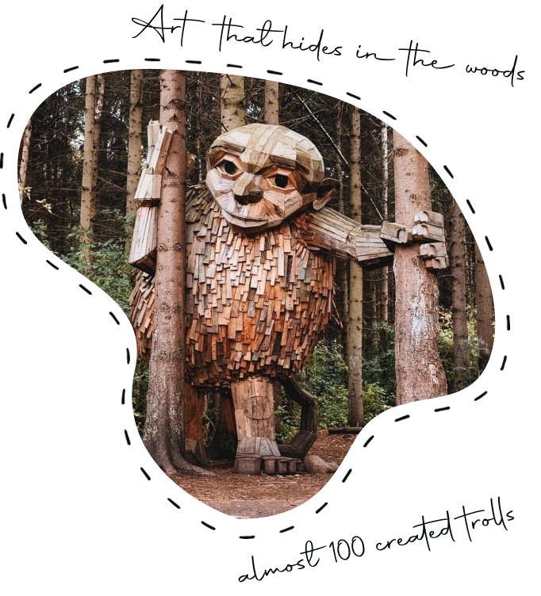
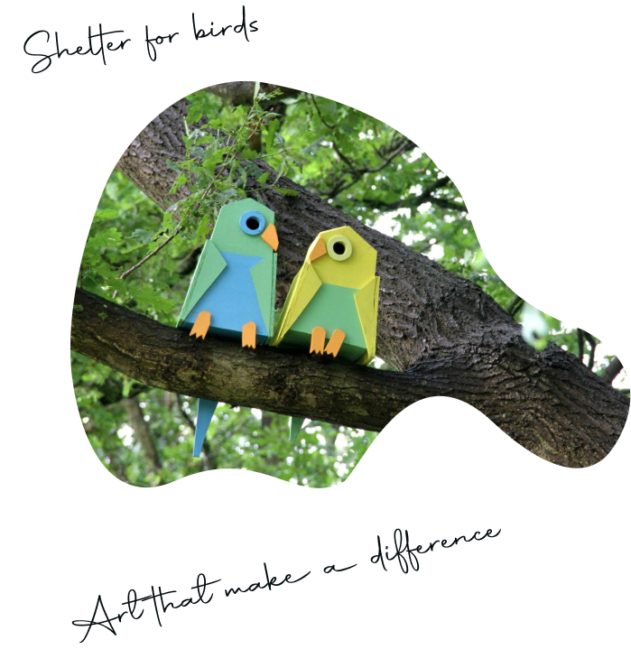
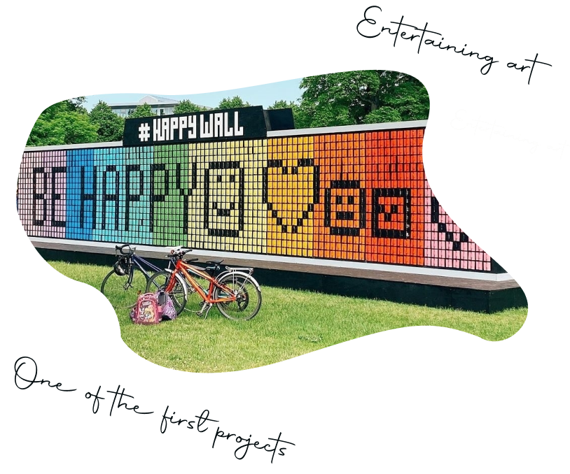

Sculptures
All the trolls are made from recycled wood. With almost 100 sculptures all over the world, these trolls have begun to have a life of their own. The message of sustainability and unlimited imagination have reached millions through in person visits, shared photos, and international media coverage.

BIRDHOUSES
Since 2006 Thomas has made and installed more than 3500 birdhouses, in different shapes and colors, all over the world. All of the birdhouses are made from recycled materials and scrap wood.

Happy wall
The installation consisted of hundreds of wooden blocks, on spinners in various colors so that they could be flipped to make different patterns allowing anyone to easily express themselves on a huge scale in a popular public spot.
